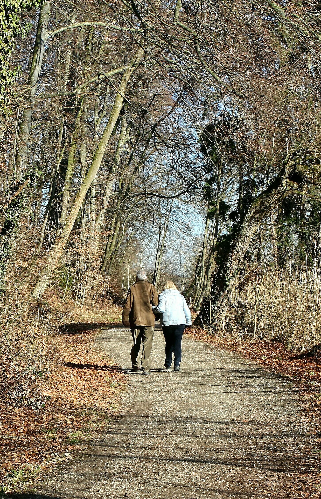

Publications
Reseach & Project
Publications
— eHealth and Geornotechology —
- Hsu, L. J., Wang, G. Y., Hu, Y. H., Lu, M. H., Lin, Y. H., Lin, W.,
& Yueh, H. P. (2019, October). Investigating older adults’ technological needs for
social activities, paper accepted for Poster presentation at the 11th International
Association of Gerontology and Geriatrics Asia/Oceania Regional Congress, 23-27 October,
Taipei, Taiwan.
- Guerrero, E.,Lu, M. H., Yueh, H. P., & Lindgren, H. (2019). Designing
and evaluating an intelligent augmented reality system for assisting older adults’
medication management. Cognitive Systems Research, 58, 278-291.[PDF]
- Guerrero, E., Lu, M. H., Yueh, H. P., Lindgren, H. (2018, Feb).Design
principles and action reflection for agent-based assistive technology. Lecture Notes
in Computer Science 11326: Artificial Intelligence in Health,
pp 84-98.
[PDF]
- Lindgren, H., Lu, M. H., Hong, Y., Yan, C. (2018, March). Applying the
zone of proximal development when evaluating clinical decision support systems: A case
study. Studies in Health Technology and Informatics 247: Building Continents of
Knowledge in Oceans of Data: The Future of Co-Created eHealth,
pp 131-135.[PDF]
- Lu, M. H., Lin, W.*, & Yueh, H. P. (2017). Developing a mobile game of
cognitive training for elders: A Design-based Research approach, Frontiers in
Psychology, 8:1837. (SSCI, IF=2.321; 5-year IF= 2.820;
39/135 Psychology)
[PDF]
- Lu, M. H., & Yueh, H. P.* (2015). A usability study of the automatic
ticket vending machines for the middle-aged and elderly patrons: The case of the Taipei
Mass Rapid Transit System, Journal of Library and Information Studies, 13 (2),
67-97.(in Chinese)(TSSCI, 1/Library Science) [PDF]
— Learning Technology Performance and Organizational Development —
- Lu, M. H., Lin, W., Yueh, H. P.* (2018). How do employees in different
job roles in the insurance industry use mobile technology differently at work?, IEEE
Transactions on Professional Communication, 61(2),
151-165. (SSCI, IF=2.184; 5-year IF=1.558; 13/79 Communication)[PDF]
- Lu, M.-H., Lin, W. & Yueh, H.-P.* (2017, June). Enterprise Mobility
Implementation Strategies and Their Impacts on Organizational Performance, Journal of
Library and Information Studies, 15(1), 77-101.
(in Chinese) (TSSCI, 1/Library Science)[PDF]
- Yueh, H.-P., Lu, M.-H.*, & Lin, W. (2016, June). Employees’ Acceptance
of Mobile Technology to Achieving High Performance in a workplace: An Empirical Study
Using SEM and fsQCA, Journal of Business Research, 69(6),
2318-2324. (SSCI, IF=3.354; 5-year IF=4.108; ABDC Rank=A, 30/121 Business) [PDF]
- Lu, M. H., Yueh, H-P., Lin, W. (2015, Nov). A case study of
implementing mobile technology and employees’ acceptance of mobile technology in
insurance industry. Taiwan Association for Educational Communications
and technology 2015 International Conference (TAECT 2015), Taipei, Taiwan. (Best
Paper Award)
- Fu, L. C., Lu, M. H., Wu, H.-Y., Lin, W.*, & Yueh, H.-P. (2015).
College students' attitudes and preferences of mobile newspaper reading: A comparison
between printed and web page layout. Lecture Notes in Educational Technology 2015:
Emerging Issues in Smart Learning,pp
105-106.
— Environmental and Cultural Resource —
- Lu, M. H.,Fu, L. C., Chiu, Y. C, & Chueh, H. C.* (2016). Men host out
while women ＂Cook＂ at Home: Examining gender image in rice TV commercials in Taiwan,
Journal of Communication and Development, 33,
56-88.(in Chinese)
[PDF]
- Tseng, T. A., Ding, T. J., Lee, A. J. Y., & Lu, M. H. (2013). The
effect of schoolyard arrangement on children's physical activity level. Journal of
Outdoor Recreation Study, 26 (3). 69-102. (in Chinese)(TSSCI)
[PDF]
- Tseng, T. A., Ding, T. J., Lee, A. J. Y., & Lu, M. H. (2012). The
relationship of the children's movement patterns and physical activity in school campus.
Journal of Health Promotion and Health Education, 38,
27-48. (in Chinese)
[PDF]
